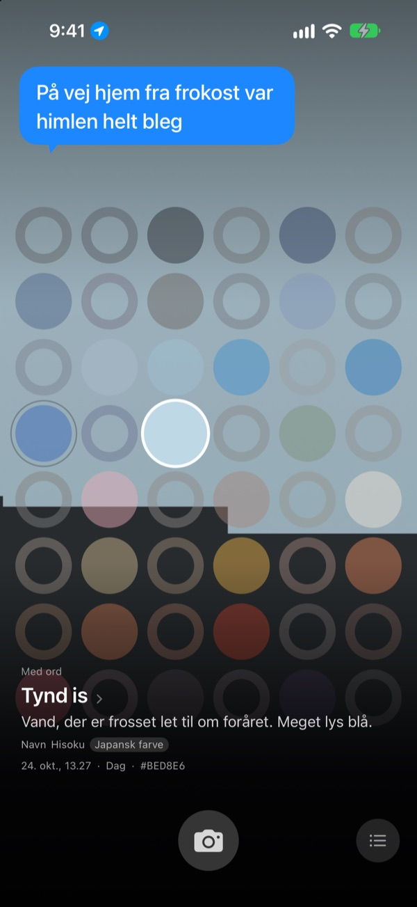
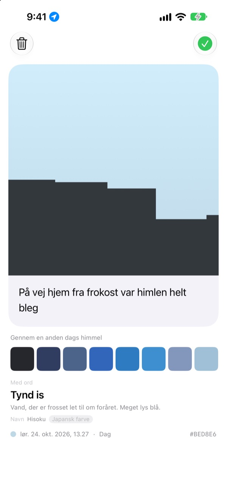
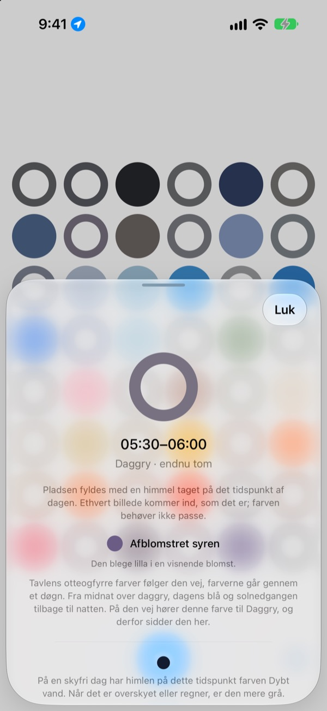
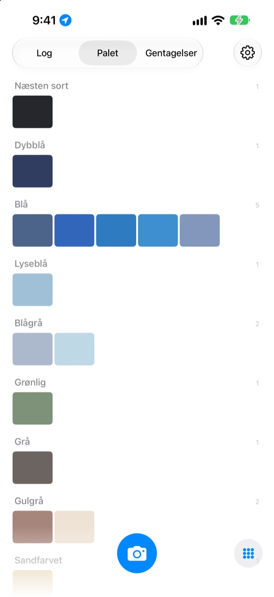

Hvilken farve havde
himlen i dag?
Tag et billede af himlen, så fyldes feltet for det tidspunkt med den farve, du fangede, på et bræt med otteogfyrre felter. Farven får også et navn, du kan se for dig, som tynd is, svømmebassinflise eller moden kaki.
Gratis. Ingen konto, intet login.

Prøv brættet
Tryk på et felt for at se, hvilken del af dagen det hører til. Tilføj et billede af himlen for at udfylde feltet for lige nu, og spol så dagene frem og se brættet ændre sig.
Du ser himlen hver dag, men kan ikke huske en eneste farve
Himlen på vej til arbejde, himlen da du gik ud efter frokost: om aftenen er farverne væk. De himmelbilleder, du faktisk tog, drukner blandt alt det andet i dit fotobibliotek. SkyDex samler dem som farver og viser på ét bræt, hvilken vej dagens himmel gik.
Hver himmel får et navn
Hver farve får først et navn, du kan se for dig, som tynd is, svømmebassinflise eller moden kaki. Under det følger et navn med en oprindelse: koreansk farve, japansk farve, pigment eller webfarve.
Er farven tæt på, står der Navn. Er den ikke, står der ærligt Nærmeste navn.

Efterlad en linje
Et kort åbner sig, så snart du har taget billedet. Skriv, hvad du tænkte, mens du så op, så dukker det frem over himlen igen, hver gang du trykker på feltet på brættet.
Du kan også lægge en anden dags himmelfarve over billedet og dele resultatet som et billede.

Tomme felter viser vej
Tryk på et tomt felt for at se, hvilken del af dagen det hører til, og hvilken farve du skal lede efter. Det fortæller også, hvordan himlen ser ud på det tidspunkt en skyfri dag, afstemt efter solopgang og solnedgang der, hvor du er.
Farven behøver ikke at passe. Det grå på en overskyet dag er også den dags himmelfarve.

Log, palet, gentagelser
Gennemse dine himle i rækkefølge, og saml farverne i paletter som blå, grå og sandfarvet. Tag den samme time en anden dag, så står de to side om side.
Widgets på hjemmeskærmen viser dagens bræt og dagens himmel med ét blik.

Tre trin, så er du i gang
- 1
Se op
Tryk på kameraknappen under brættet, og lad himlen fylde firkanten.
- 2
Et felt fyldes
Feltet for lige nu får den farve, du fangede, og et navn.
- 3
Efterlad en linje
Skriv på kortet, der åbner sig, hvad du tænkte.
Sådan deler brættet dagen
- Midnat · 00.00–05.00
- seks felter
- Daggry · 05.00–08.00
- seks felter
- Dag · 08.00–16.00
- tolv felter
- Sen eftermiddag · 16.00–18.00
- seks felter
- Solnedgang · 18.00–21.00
- tolv felter, ét for hvert kvarter
- Nat · 21.00–24.00
- seks felter
Omkring solnedgang, hvor himlen skifter hurtigt, sidder felterne tæt, og midt om natten, hvor den næsten står stille, er de brede. Øverst er midnat, og dagen løber nedad.
Spørgsmål
Hvordan bliver et felt udfyldt?
En himmel, du tager i dag, udfylder feltet for det tidspunkt, du tog den, også selvom farven ikke blev, som du ventede. Sådan så himlen faktisk ud lige da. Himle fra tidligere dage kommer ind efter farve: ligger en tæt nok på et felts farve, udfylder den feltet, og hver himmel udfylder kun ét felt.
Et felt, der var fyldt i går, er tomt i dag.
Brættet er altid i dag. Et felt, som gårsdagens himmel udfyldte efter tidspunkt, bliver matchet igen alene efter farve, når dagen skifter. Derfor er brættet nogle dage næsten fuldt og andre dage ret tomt. Dine billeder er ikke forsvundet: alle himle ligger i Log og i farverækkefølge i Palet.
Mine udfyldte felter falmer.
Det er med vilje. Et billede beholder sin rigtige farve i en uge og falmer så langsomt over de næste otte uger. Det bliver ikke slettet og falmer aldrig helt væk. Tag himlen på det tidspunkt igen, så står feltet straks i fuld farve. Der er ingen stime at bryde og ingen point at vinde tilbage.
Skal farven passe?
Nej. Der er ikke noget, der hedder bestået eller dumpet. Alle billeder gemmes, og det grå på en overskyet dag er også den dags himmelfarve.
Hvorfor spørger appen om min placering?
Kun for at kunne fortælle dig, når du trykker på et tomt felt, hvordan en skyfri himmel ser ud på det tidspunkt, afstemt efter solopgang og solnedgang der, hvor du er. Den bruger en omtrentlig placering på kilometerniveau, og koordinater bliver aldrig knyttet til dine billeder. Siger du nej, virker alt stadig, og Seoul bruges som udgangspunkt.
Kan jeg tilføje en himmel fra mit fotobibliotek?
Ja. En himmel, du vælger i Fotos i stedet for med kameraet, beskæres også til en firkant og udfylder feltet for lige nu, præcis som en, du tager.
Hvordan sletter jeg et billede?
Åbn billedet og tryk på Slet, eller stryg til venstre på det i Log. Det fjernes fra både din enhed og din iCloud. Sletter du appen, bliver kopien i iCloud liggende, så dine himle kommer tilbage, hvis du installerer den igen.
Hvad sker der, når jeg skifter telefon?
Dine himle gemmes i din egen iCloud, så de følger med til en ny enhed, der er logget ind med den samme Apple-konto. Der er ingen konto og ingen server, og dine billeder og farver sendes aldrig til udvikleren. Ingen reklamer, ingen sporing.
Er den virkelig gratis?
Ja, alle funktioner er gratis. Kan du lide appen, kan du give udvikleren drikkepenge inde i appen, men de låser ikke op for noget.
Hvilke enheder virker den på?
iPhone med iOS 17.0 eller nyere, kun i stående format.
Fejl, mærkelig opførsel eller noget, du gerne vil sige: skriv til leeo@kakao.com. Fortæl gerne, hvad du var i gang med, og hvilken iOS-version du har, så er det meget nemmere at finde årsagen.